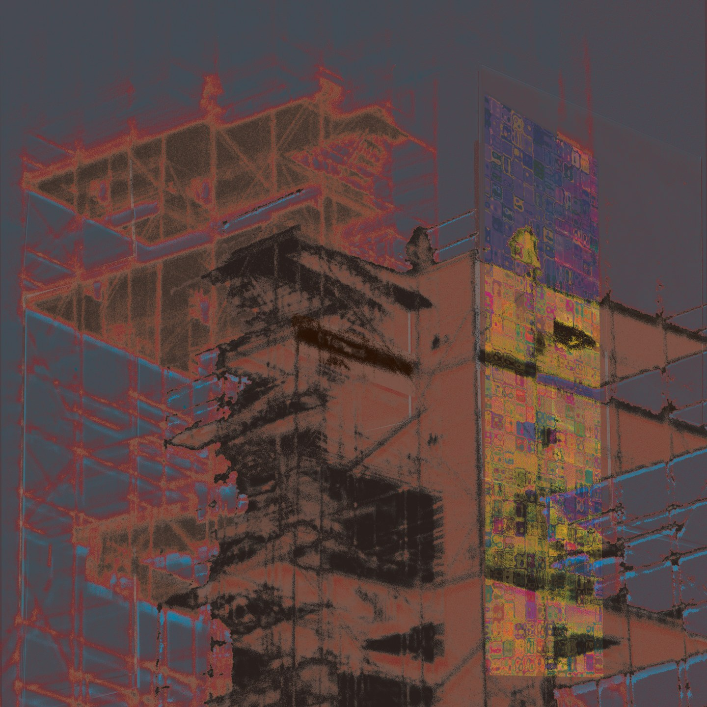
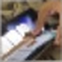
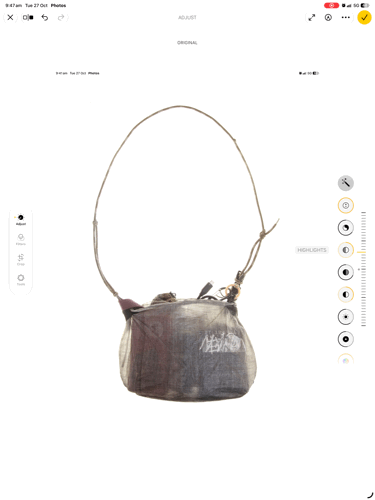

<title>New Moon Mining</title>
<meta name="claude:viewport-fit-sides" content="cover">
<style>
/* Layout: two full-bleed screens on one stone field. Welcome = centred art; Menu = stacked file-extension links on hazy patches */
:root{
  --field:#c1bcac; --patch:#bfb9ba; --patch-2:#bdb7b6; --signal:#4ccf6b; --ink:#1a1a18;
  --vh:100vh;
  --m: max(8px, 2.5vmin);                                   /* one margin, all four sides */
  --pw: calc(100vw - 2*var(--m)); --ph: calc(var(--vh) - 2*var(--m));
  --menu-size: min(96px, calc(var(--ph) * .085), calc(var(--pw) * .22));   /* stack always fits inside the painting */
  --menu-gap: calc(var(--menu-size) * .64);
  --sans: "Helvetica Neue", Helvetica, Arial, sans-serif;
  color-scheme: light;
}
@supports (height:100dvh){:root{--vh:100dvh}}
html,body{height:100%}
/* no tap flash, long-press callout, or selection highlight on touch */
*{-webkit-tap-highlight-color:transparent}
#welcome,#menu,.tool{-webkit-user-select:none;user-select:none;-webkit-touch-callout:none;touch-action:manipulation}
body.editing [data-edit-text]{-webkit-user-select:text;user-select:text}
body{background:var(--field);color:var(--ink);overflow:hidden;
  padding-left:max(16px,env(safe-area-inset-left,0px));
  padding-right:max(16px,env(safe-area-inset-right,0px));
  font-family:var(--sans)}
.screen{position:fixed;inset:0;display:grid;place-items:center;background:var(--field);
  padding-left:max(16px,env(safe-area-inset-left,0px));padding-right:max(16px,env(safe-area-inset-right,0px));
  transition:opacity .6s ease, visibility 0s linear .6s}
.screen.off{opacity:0;visibility:hidden;pointer-events:none}
.screen:not(.off){transition:opacity .6s ease, visibility 0s}
#welcome{cursor:pointer;perspective:1400px}
.stage{transform-origin:var(--nail,8% 4%);will-change:transform}

/* welcome */
.stage{position:absolute;top:calc(var(--m) + env(safe-area-inset-top,0px));bottom:calc(var(--m) + env(safe-area-inset-bottom,0px));
  left:calc(var(--m) + env(safe-area-inset-left,0px));right:calc(var(--m) + env(safe-area-inset-right,0px))}
.img-slot{position:absolute;overflow:hidden;background:var(--field)}
.img-slot img{width:100%;height:100%;object-fit:cover;display:block;user-select:none;-webkit-user-drag:none;pointer-events:none}
.main{inset:0}
.thumb{--s:min(var(--pw),var(--ph));top:calc(var(--s)*.015);right:calc(var(--s)*.017);width:calc(var(--s)*.087);aspect-ratio:1/1;z-index:2}

/* .jpg page: same size and proportions as the hung painting; field flashes through the palette */
.sq-stage{--ar:.75;--w:min(var(--pw), calc(var(--ph)*var(--ar)));position:relative;width:var(--w);aspect-ratio:var(--ar)}   /* box takes the image's own shape: no crop */
.sq-stage .thumb{--s:calc(var(--w)*min(1, 1/var(--ar)))}
#p-jpg{animation:flash .25s step-end infinite}
@keyframes flash{0%{background:#c1bcac}20%{background:#8dfc91}40%{background:#c9b9ff}60%{background:#ffa175}80%{background:#ffffff}}
@media (prefers-reduced-motion:reduce){#p-jpg{animation:none}}

/* menu */
.menu{display:flex;flex-direction:column;align-items:center;gap:var(--menu-gap);margin:0;padding:0;list-style:none}
.menu li{position:relative}
.menu a{position:relative;display:block;color:var(--signal);text-decoration:none;
  font-size:var(--menu-size);font-weight:300;line-height:1;letter-spacing:.005em;
  padding:.28em .2em .32em;z-index:1}
/* hazy blocky patches behind each label */
.menu li::before,.menu li::after{content:"";position:absolute;z-index:0;filter:blur(3px);pointer-events:none;transition:opacity .3s}
.menu li::before{background:var(--patch);inset:var(--a,0 6% 0 6%)}
.menu li::after{background:var(--patch-2);opacity:.7;inset:var(--b,-14% 22% 70% 30%)}
.menu li:nth-child(1){--a:-6% 4% 6% 4%; --b:-22% 18% 72% 26%}
.menu li:nth-child(2){--a:0 -6% 0 4%; --b:20% 86% 22% -22%}
.menu li:nth-child(3){--a:0 -6% 0 4%; --b:22% 88% 18% -20%}
.menu li:nth-child(4){--a:0 2% -6% 2%; --b:4% 70% 6% 10%}
.menu a:hover,.menu a:focus-visible{outline:none;color:var(--ink)}
.menu li:hover::before{background:var(--signal);opacity:.25}

/* reveal: menu sits under the wall; the falling painting uncovers it */
#welcome{z-index:2}
#welcome.falling{background:transparent}
@media (prefers-reduced-motion:reduce){.screen{transition:none!important}}

/* edit mode */
.tool{position:fixed;z-index:20;bottom:calc(14px + env(safe-area-inset-bottom,0px));
  width:26px;height:26px;border-radius:50%;border:1px solid rgba(26,26,24,.25);background:transparent;
  color:rgba(26,26,24,.45);font:11px/1 var(--sans);cursor:pointer;opacity:.35;transition:opacity .2s}
.tool:hover,.tool:focus-visible{opacity:1}
.edit-toggle{right:calc(14px + env(safe-area-inset-right,0px))}
.reload{left:calc(14px + env(safe-area-inset-left,0px));font-size:13px}
body.editing .edit-toggle{opacity:1;background:var(--ink);color:var(--field);border-color:var(--ink)}
body.editing .img-slot{cursor:copy;outline:1px dashed rgba(26,26,24,.4);outline-offset:2px}
body.editing #welcome{cursor:default}
body.editing [data-edit-text]{cursor:text;outline:1px dashed rgba(26,26,24,.3);outline-offset:2px}
.img-slot.drag{outline:1px solid var(--ink)!important}
</style>

<section class="screen" id="welcome" aria-label="Welcome">
  <div class="stage">
    <div class="img-slot main" data-edit-img="art" aria-label="Main image">
      
    </div>
    <div class="img-slot thumb" data-edit-img="thumb" aria-label="Thumbnail">
      
    </div>
  </div>
</section>

<nav class="screen off" id="menu" aria-label="Main menu">
  <ul class="menu">
    <li><a href="#jpg" data-edit-text="m1">.jpg</a></li>
    <li><a href="#mp3" data-edit-text="m2">.mp3</a></li>
    <li><a href="#mp4" data-edit-text="m3">.mp4</a></li>
    <li><a href="#irl" data-edit-text="m4">.irl</a></li>
  </ul>
</nav>

<section class="screen off" id="p-jpg" aria-label=".jpg">
  <div class="sq-stage">
    <div class="img-slot main" data-edit-img="jpg-main" aria-label="Main image">
      
    </div>
    <div class="img-slot thumb" data-edit-img="jpg-thumb" aria-label="Thumbnail">
      
    </div>
  </div>
</section>

<button class="tool reload" id="reload" title="Rehang image" aria-label="Rehang image">↻</button>
<button class="tool edit-toggle" id="editToggle" aria-pressed="false" title="Edit content">✎</button>
<input type="file" id="picker" accept="image/*" hidden>

<script>
(function(){
  const KEY='nmm:';
  const get=k=>{try{return localStorage.getItem(KEY+k)}catch(e){return null}};
  const set=(k,v)=>{try{localStorage.setItem(KEY+k,v)}catch(e){}};
  let editing=false;

  // screens
  const welcome=document.getElementById('welcome'), menu=document.getElementById('menu'), stage=welcome.querySelector('.stage');
  let fall=null;
  const screens=()=>[...document.querySelectorAll('.screen')];
  const snapOff=el=>{el.style.transition='none';el.classList.add('off');void el.offsetWidth;el.style.transition=''};
  const current=()=>screens().find(s=>!s.classList.contains('off'));
  const show=id=>{
    if(id==='welcome'){
      if(fall){fall.cancel();fall=null}
      welcome.classList.remove('falling','off');
      screens().forEach(s=>{ if(s!==welcome) snapOff(s) });
      return;
    }
    screens().forEach(s=>s.classList.toggle('off',s.id!==id));
  };

  // painting comes off the wall; where the click lands decides how it was knocked
  function drop(e){
    if(fall||welcome.classList.contains('off')) return;
    if(matchMedia('(prefers-reduced-motion: reduce)').matches){show('menu');return}
    menu.style.transition='none'; menu.classList.remove('off'); void menu.offsetWidth; menu.style.transition='';
    welcome.classList.add('falling');
    const r=stage.getBoundingClientRect(), rnd=(a,b)=>a+Math.random()*(b-a), cl=x=>Math.max(0,Math.min(1,x));
    const cx=e&&e.clientX!=null?e.clientX:r.left+r.width*rnd(.3,.7), cy=e&&e.clientY!=null?e.clientY:r.top+r.height*rnd(.3,.7);
    const u=cl((cx-r.left)/r.width), v=cl((cy-r.top)/r.height);
    const hx=(u-.5)*2, vy=(v-.5)*2, ax=Math.abs(hx), s=hx<0?-1:1;
    // the hit side breaks free; the far nail holds; a centre hit pulls both
    stage.style.setProperty('--nail', `${50-42*hx}% 4%`);
    const A=s*(.6+2.4*ax), end=s*(2+13*ax)+rnd(-1.5,1.5);               // rattle angle: small, only ever toward the free side
    const drift=-hx*rnd(3,8), tilt=4+8*v+rnd(-1.5,1.5);              // low hits kick the bottom out further
    const kx=-hx*3, j=()=>rnd(-.8,.8);                               // a short shove away from the hand, with jitter
    const dy=innerHeight-r.top+r.height*.4;
    const sh=a=>`drop-shadow(${3*a}px ${9*a}px ${16*a}px rgba(26,26,24,${.22*a}))`;
    // violent rattle on the nails: fast, decaying, irregular; it only ever settles downward, never lifts
    const snap='cubic-bezier(.15,.9,.25,1)';
    const rattle=[[.025,1,1.0,1],[.05,-.5,.35,1.4],[.08,.7,.85,2],[.105,-.3,.45,2.6],[.13,.4,.7,3.4]];
    const frames=[{transform:'none',filter:sh(0),easing:snap}];
    rattle.forEach(([o,x,ra,y],i)=>frames.push({transform:`translate(${kx*x+j()}px,${y+rnd(0,.6)}px) rotate(${A*ra*rnd(.8,1.2)}deg)`,filter:sh(.12*(i+1)),offset:o+.03*v*(i+1)/5,easing:i<4?snap:'cubic-bezier(.7,0,.84,0)'}));
    frames.push({transform:`translate(${drift}vw,${dy}px) rotate(${end}deg) rotateX(${tilt}deg)`,filter:sh(1),offset:1});
    fall=stage.animate(frames,{duration:380+120*v,fill:'forwards'});
    fall.onfinish=()=>{
      welcome.style.transition='none'; welcome.classList.add('off'); void welcome.offsetWidth; welcome.style.transition='';
    };
  }

  welcome.addEventListener('click',e=>{ if(!editing) drop(e) });
  welcome.addEventListener('contextmenu',e=>{ if(!editing) e.preventDefault() });
  document.getElementById('reload').addEventListener('click',e=>{ e.stopPropagation(); show('welcome') });
  document.addEventListener('keydown',e=>{
    if(editing) return;
    if(e.key==='Escape'){ const c=current(); show(c&&c.id.startsWith('p-')?'menu':'welcome') }
    else if((e.key==='Enter'||e.key===' ') && !welcome.classList.contains('off')){e.preventDefault();drop()}
  });
  // .jpg box follows whatever image is in it, so nothing is ever cropped
  document.querySelectorAll('.sq-stage').forEach(st=>{
    const im=st.querySelector('.main img'), sync=()=>{ if(im.naturalWidth) st.style.setProperty('--ar', im.naturalWidth/im.naturalHeight) };
    im.addEventListener('load',sync); sync();
  });

  // menu links: open their page when it exists
  menu.querySelectorAll('a').forEach(a=>a.addEventListener('click',e=>{e.preventDefault(); if(editing) return; const p=document.getElementById('p-'+a.getAttribute('href').slice(1)); if(p) show(p.id) }));

  // text: contents only
  const texts=[...document.querySelectorAll('[data-edit-text]')];
  texts.forEach(el=>{
    const k='t:'+el.dataset.editText, v=get(k); if(v!==null) el.textContent=v;
    el.addEventListener('input',()=>set(k,el.textContent));
    el.addEventListener('paste',e=>{e.preventDefault();document.execCommand('insertText',false,e.clipboardData.getData('text/plain'))});
    el.addEventListener('keydown',e=>{if(editing&&e.key==='Enter'){e.preventDefault();el.blur()}});
  });

  // images: contents only
  const picker=document.getElementById('picker'); let target=null;
  const load=(slot,file)=>{ if(!file||!file.type.startsWith('image/'))return;
    const r=new FileReader(); r.onload=()=>{slot.querySelector('img').src=r.result; set('i:'+slot.dataset.editImg,r.result)}; r.readAsDataURL(file); };
  document.querySelectorAll('[data-edit-img]').forEach(slot=>{
    const v=get('i:'+slot.dataset.editImg); if(v) slot.querySelector('img').src=v;
    slot.addEventListener('click',e=>{ if(!editing) return; e.stopPropagation(); target=slot; picker.value=''; picker.click() });
    slot.addEventListener('dragover',e=>{ if(!editing) return; e.preventDefault(); slot.classList.add('drag') });
    slot.addEventListener('dragleave',()=>slot.classList.remove('drag'));
    slot.addEventListener('drop',e=>{ if(!editing) return; e.preventDefault(); e.stopPropagation(); slot.classList.remove('drag'); load(slot,e.dataTransfer.files[0]) });
  });
  picker.addEventListener('change',()=>{ if(target) load(target,picker.files[0]) });

  // toggle
  const btn=document.getElementById('editToggle');
  btn.addEventListener('click',e=>{
    e.stopPropagation(); editing=!editing;
    document.body.classList.toggle('editing',editing); btn.setAttribute('aria-pressed',editing);
    texts.forEach(el=>{ if(editing){ el.contentEditable='plaintext-only'; if(el.contentEditable!=='plaintext-only') el.contentEditable='true'; } else { el.removeAttribute('contenteditable'); } });
  });
})();
</script>
